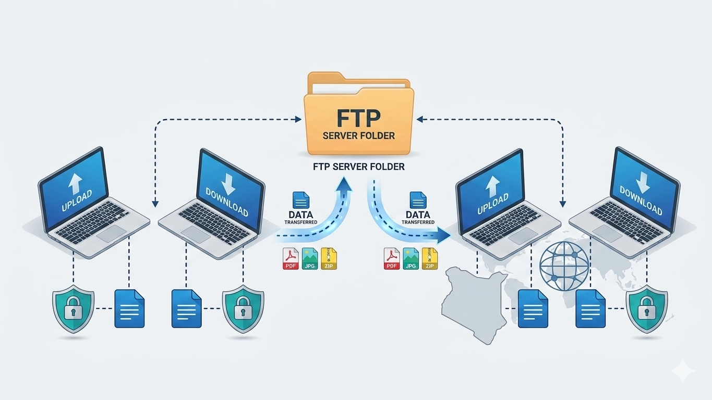

FTP is a standard network protocol designed specifically for transferring files between a client and a server on a TCP‑based network (like the Internet). Unlike HTTP (which is optimized for viewing hypertext), FTP is optimized for bulk, reliable file transfers with features like:
Role:
To provide a simple, widely supported method for uploading, downloading, and managing files on remote servers, often used for website maintenance, distributing large software packages, and batch data transfers.